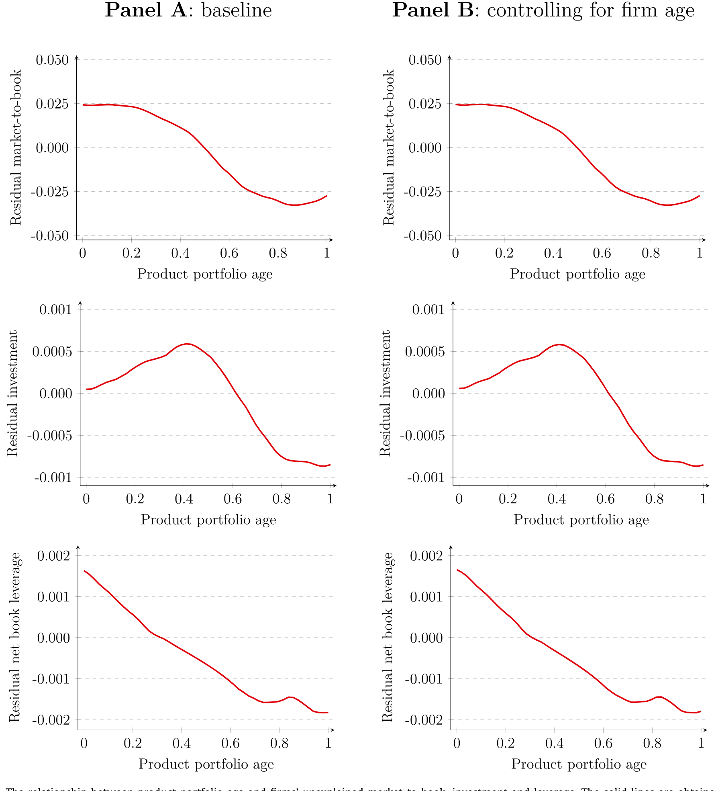
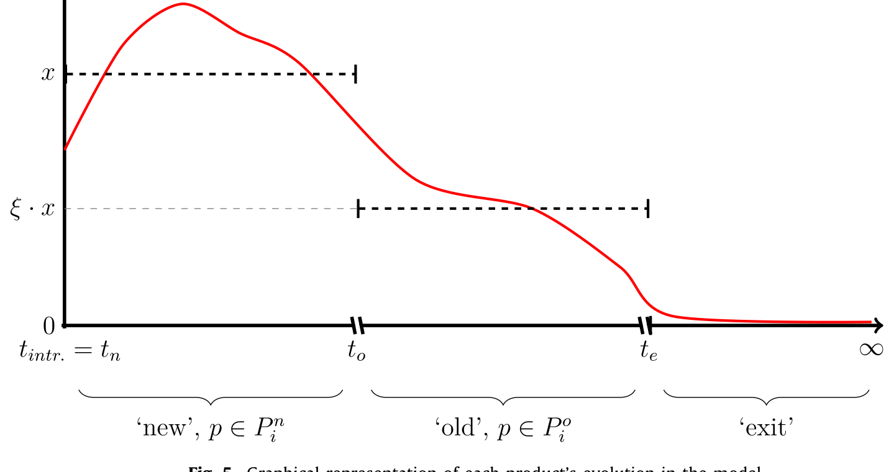
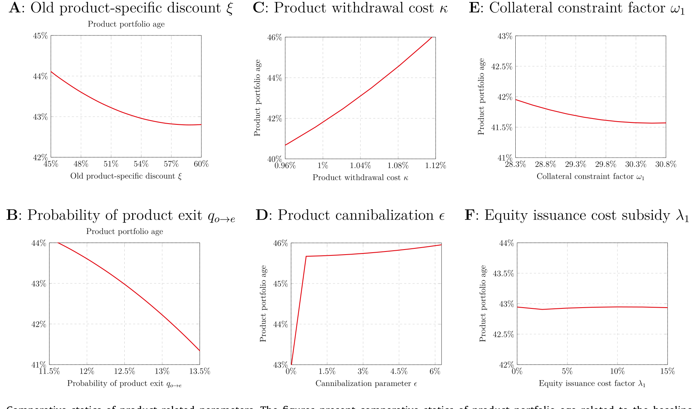
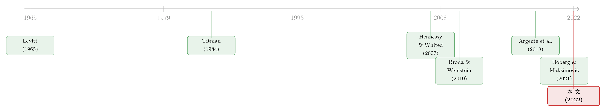

产品会老，公司也会：把现金流拆回一筐正在变旧的货架
本文读的是 Hajda & Nikolov (2022, Journal of Financial Economics)：他们把企业的现金流「微观地」拆回到一筐正在老化的产品上，构建并结构估计了一个嵌入产品组合特征的动态行业均衡模型。核心结论是——产品组合的「年龄」是一个被传统公司金融模型遗漏的状态变量；它同时压低了投资、杠杆与市值比，而且新产品引入与资本投资是互补、而非替代。估计显示，每件旧产品只能贡献新产品收入的 54.2%，每引入一件新产品的成本约为资产的 0.68%（对一家典型样本公司即 $6.85m）。
1 引言：现金流是从哪儿来的？
打开任何一本动态公司金融的教科书，企业的现金流几乎总是从天上掉下来的——它被写成一个外生的 AR(1) 生产率冲击，公司围着这个冲击做投资、发债、留现金。这套写法很优雅，也很好估计，但它回避了一个再朴素不过的问题：现金流到底是从哪儿来的？
答案当然是产品。一家公司把想法变成利润，靠的不是一个抽象的 z，而是货架上一件件具体的商品：一瓶洗发水、一包薯片、一支牙膏。而产品有一个谁都躲不开的宿命——它会老。营销学里把这叫做 产品生命周期 (product life cycle)：新产品上市时卖得最好，随着时间推移收入一路下滑，直到某天彻底退场（Levitt, 1965）。
这件事的规模超出多数人的直觉。消费品行业的公司，平均每年要把产品组合里 10.8% 的产品「换血」一次——要么推新，要么下架（Argente et al., 2018）。如果现金流的源头本身在以这样的速度新陈代谢，那么把现金流写成一个光滑的外生过程，就等于把公司金融里一个真实而剧烈的内生力量，整个塞进了「固定效应」这个黑箱里。
于是一个自然的问题浮出水面：当一家公司的产品组合整体「变老」时，它的投资和融资决策会怎么变？ 这正是 Hajda 和 Nikolov 这篇 2022 年发在 JFE 上的论文要回答的。而他们给出的答案，比「现金流变少了所以投资变少」这句废话要深刻得多。
2 一个被遗漏的状态变量：产品组合年龄
要把「产品会老」这件事变成可以度量的东西，作者定义了一个关键变量：产品组合年龄 (product portfolio age)，即一家公司产品组合中，已经超过自身寿命一半的产品所占的份额。这个变量越大，说明公司手里的「老货」越多，离下一轮收入断档就越近。
接着，一个自然的问题是：这个产品层面的生命周期，能不能「加总」到公司层面？毕竟单件产品收入随年龄下滑（Argente et al., 2021b）是微观规律，未必在公司层面留下痕迹。本文的第一个重要发现恰恰是：能。产品组合年龄与公司盈利能力显著负相关——老产品越多，利润越低。更重要的是，它进一步传导到了估值与政策上：
- 产品组合年龄与 市值账面比 (market-to-book) 负相关——管理产品组合，直接关系到公司价值；
- 在控制了其它公司特征后，资本投资和净杠杆 (net leverage) 也都与产品组合年龄负相关。
这里有一个容易被忽略、却至关重要的细节：产品组合年龄的效应，和公司年龄 (firm age) 的效应截然不同。 一家成立三十年的老公司，完全可能因为不断推新而拥有一个很「年轻」的产品组合；反过来，一家年轻公司也可能守着几件正在老去的拳头产品。把这两个「年龄」分开，是这篇论文实证部分的立身之本。

Figure 3: The relationship between product portfolio age and firms’ unexplained market-to-book, investment and leverage. The solid lines are obtained
如图 3 所示，作者用局部多项式回归 (local polynomial regression) 画出了产品组合年龄与「未被解释的」市值比、投资、杠杆之间的关系——三条线齐刷刷地向下倾斜。这不是某个线性回归系数的人为产物，而是数据里一个稳健的、单调的形状。
3 识别策略：为什么需要一个结构模型？
读到这里，一个挑剔的读者会立刻反问：这些都只是相关关系。产品组合老、投资少、借债少——它们可能同时被某个第三因素驱动（比如行业正在衰退），谁是因谁是果根本说不清。
作者很清楚这一点。所以他们没有停在实证相关上，而是走了结构估计 (structural estimation) 这条更重的路：搭一个能内生地生成上述所有相关关系的动态模型，再用数据把模型的深层参数估出来。 如果一个建立在「产品会老」这一条机制上的模型，能够同时复现投资、杠杆、市值比与产品组合年龄的全部负相关，那么我们就有理由相信，产品生命周期确实是这些政策背后的那根弦——而不是巧合。
这就是结构方法相对于简约式 (reduced-form) 回归的好处：它逼着你把「机制」写成方程，然后让方程去和数据对账。代价是模型设定的可信度全压在你肩上；好处是，一旦对上了，你能回答简约式永远回答不了的反事实问题——「如果产品永远不老，公司会借多少债？」
4 模型：一筐会老的产品，加一道融资摩擦
模型是一个垄断竞争 (monopolistic competition) 下的动态行业均衡 (dynamic industry equilibrium) 框架。每家公司同时做三件事：投资（买资本）、融资（发债、留现金、必要时发高成本的股权）、以及产品决策（要不要引入新产品）。
收入怎么来。 公司用资本和产品共同生成收入。关键在于每件产品都遵循生命周期：新产品收入更高、预期存活更久；老产品收入打折，而且随时可能退场。于是整个产品组合的「年龄结构」就成了决定收入水平与收入风险的核心。
融资这一侧。 公司优先用当期现金流；不够就借净债务 (net debt)，但要受抵押约束 (collateral constraint)——能借多少，取决于有多少资产能拿去抵押；再不够，只能去发有成本的外部股权。这道融资摩擦，是后面所有「预防性」故事的根源。
那个核心的权衡。 引入一件新产品时，公司在掂量两样东西：一边是收益——更年轻的产品组合意味着更高、更持久的收入；另一边是成本——引入新产品要花一笔 产品引入成本 (product introduction cost)。整个模型的张力，就压在这一道天平上。
我们可以把公司（股东价值）的递归结构写成标准的贝尔曼方程 (Bellman equation) 形式。下面这个方程是理解全文机制的枢纽，我把它逐块拆开：
其中状态 s 包含资本 k、净债务 b 与产品组合的年龄结构，控制变量为下期资本 k'、下期债务 b' 与产品引入数量 ι。

Figure 5: Graphical representation of each product’s evolution in the model
图 5 把单件产品在模型中的演化画了出来：一件产品诞生时收入最高，随后逐期衰减，并以一定概率退出——正是这条曲线，在公司层面叠加成了我们在数据里看到的产品组合年龄效应。
为什么投资和产品引入是互补的？ 这是模型给出的第一个、也是最反直觉的结论。直觉上你可能觉得：钱就那么多，多推新产品就得少买设备，二者是替代品。但模型说不是。当公司引入新产品、让组合「变年轻」时，未来的收入水平更高、也更持久——这恰恰抬高了对实物资本投资的回报，于是公司一边推新、一边加大资本开支。反过来，当组合老化、收入预期下滑且变得更不确定时，公司就同时收缩产品引入和投资。这就解释了数据里投资与产品组合年龄的那条向下的线。
为什么老化会逼出预防性储蓄？ 这是第二个、也是最贴近资本结构的结论。当产品组合变老，公司面临一个迫近的「收入断档」——老产品要变得一文不值了。为了避免到时候被迫去发那笔昂贵的外部股权（也就是方程里的 λ(e)）来填窟窿，公司提前保留债务容量 (debt capacity)，于是杠杆下降。但要注意：引入新产品本身又主要靠债务融资，所以推新的当下杠杆反而会上升。两股力量叠加，最终落成了「杠杆与产品组合年龄负相关」这条实证规律。
5 结构估计：把机制翻译成数字
模型搭好之后，作者用 模拟矩估计 (simulated method of moments, SMM) 来估参数，做法上follow Lee and Ingram (1991) 与 Hennessy and Whited (2007)：先用一组参数 \(\beta=(\theta,\sigma,\rho,\delta,\psi,\omega,\eta,\xi)\) 解模型、模拟出 S=10 套人工数据，再让模型矩去逼近真实数据里的对应矩。
识别的关键，在于产品组合数据本身。一家公司产品组合的结构（多新、多集中），直接透露了它对生命周期的暴露程度——正是这些可观测的组合特征，帮助分别识别出两个最要命的参数：
- 旧产品收入折扣：估计结果是每件旧产品只能贡献新产品收入的
54.2%。换句话说，一件产品老到一半寿命之后，收入要砍掉将近一半。 - 产品引入成本：估计为资产的
0.68%，对一家典型样本公司而言是$6.85m。这不是个小数目——推一件新品，相当于烧掉近七百万美元。
两个估计都显著且量级可观，说明产品层面的经济力量是「真金白银」级别的，不是统计噪声。
6 反转：当我们把产品生命周期「关掉」
结构模型最迷人的地方，是它能做反事实 (counterfactual)。作者动手做的几个实验，把这篇论文从「又一个能拟合数据的模型」推到了「产品维度对公司政策有量级意义」的结论上：
- 把新旧产品之间的收入差距缩小
1%，公司价值上升0.083%； - 把产品引入成本降低
1%，公司价值上升0.068%； - 最震撼的一个——如果彻底消除产品生命周期这个渠道（让产品永不变老），公司基本上会把自己的杠杆率翻一倍。
最后这一条，把整个故事钉死了：传统模型里之所以解释不好为什么有些公司死守着低杠杆、保留大量债务容量，可能恰恰是因为它们漏掉了「产品会老」这件事。一旦公司不必再担心收入断档，预防性动机消失，它就敢大胆加杠杆。产品生命周期，是 precautionary debt capacity 背后一根此前看不见的弦。

Figure 6: Comparative statics of product-related parameters. The figures present comparative statics of product portfolio age related to the baseline
图 6 的比较静态 (comparative statics) 进一步说明：产品相关参数的变化，会系统性地改变公司的盈利能力、政策与行业结构——更严重的生命周期效应带来更强的预防性储蓄动机，也带来更不集中的行业结构。
7 横截面：哪些公司更「怕老」？
把模型放到子样本上重估，作者描出了一张「谁更暴露于产品生命周期」的地图。沿着公司层面与产品市场策略两组维度，结论相当一致也相当符合直觉：
- 产品组合越小的公司，越暴露于生命周期——旧产品折扣更深、引入成本更高，现金流更risky，于是采用更低的杠杆。反过来，产品越多的公司组合更年轻、利润更高也更平稳，相当于用产品线做了「收入分散」。
- 企业间产品集中度 (between-firm product concentration) 越低，公司对产品层面冲击越敏感，产品变旧得更快，推新频率更高。
- 产品越独特的公司（以销货成本作代理）引入成本更高，但对生命周期的暴露反而更低——它们在用广告等开支主动「延寿」。
- 产品越耐用，公司能从一件产品上受益更久，但引入成本也更高（两股相反的力量里，「更耐用→活得更久」这一边占了上风）。
- 产品供给多样性 (product offering variety) 越广，越不暴露于生命周期、引入成本也越低——这是产品层面的分散化。有意思的是，多样性还随可抵押资本比例变化，暗示公司可能把品牌里那部分无形资本拿去当抵押品了。
这部分的整体信息是：产品市场策略本身，就是公司用来对冲产品生命周期的工具。 产品的数量与销售结构，都是研究公司政策时不该忽略的维度。
8 文献脉络
这条研究线的演进，是「营销学的洞见」一步步被「公司金融的工具」接管的过程。
最早，产品生命周期是 Levitt (1965) 在《哈佛商业评论》里提出的营销概念——新品旺、老品衰。与此并行，公司金融这边在问「产品市场和资本结构有什么关系」：Titman (1984) 把企业战略和资本结构连了起来，Maksimovic、Phillips、Chevalier 等人则在产业组织的框架里讨论债务如何影响产品市场竞争。
接着，结构估计这套方法论成熟起来——Hennessy and Whited (2007) 用结构方法估计外部融资成本，奠定了「拿动态模型去对账数据」的范式，后来 Nikolov and Whited (2014)、Nikolov et al. (2018, 2021) 一脉相承。
然后，宏观和产业经济学这边积累了大量产品层面的微观证据：Broda and Weinstein (2010) 量化了产品的创造与毁灭，Argente et al. (2018, 2021b) 则直接刻画了产品的生命周期。
但真正关键的一步，是把这两条线接起来。Hoberg and Maksimovic (2021) 用文本方法推断公司所处的生命周期阶段，发现晚期公司的投资对 Tobin's q 更敏感——这是离本文最近的前驱。而本文的位置，是第一次直接用解构到产品层面的数据，把产品生命周期嵌进一个可估计的动态行业均衡模型，从而给出它对公司政策的定量证据。

（关于「资本本身也会老、并因此重塑杠杆与债务期限」这条平行线索，可参见《飞机要换，债也要「换」：把「期限匹配」拆回资本的年龄》；关于产品与创新如何从底层工艺中长出来，可参见《把「工艺创新」一刀切开：地基工艺如何长出新产品》。）
9 评论与延伸（Q&A + 研究方向）
(a) 几个可能的疑问
Q：产品组合年龄和公司年龄，到底有什么不一样？
公司年龄度量的是「成立了多久」，而产品组合年龄度量的是「手里的货有多旧」。一家三十年的老公司可以靠不断推新维持一个年轻的组合，一家年轻公司也可能守着几件正在过气的拳头产品。本文反复强调，产品组合年龄对现金流的影响显著不同于公司年龄——前者抓住的是收入源头的新陈代谢，后者更多是经营成熟度。把二者混为一谈，正是过去把产品维度塞进固定效应的代价。
Q：投资和产品引入是互补的，这听起来反直觉——钱不是有限的吗？
直觉上「多推新品=少买设备」是把二者当成对预算的争夺。模型的洞见在于：引入新产品让收入更高、更持久，这本身抬高了实物资本投资的边际回报，于是两者同向而行。它们竞争的不是一笔固定预算，而是被同一个状态变量（产品组合的年轻程度）共同驱动。
Q：结构估计的识别从哪来？凭什么相信那两个关键参数？
识别来自产品组合数据本身。一家公司组合的结构——产品多新、多集中——是它对生命周期暴露程度的「指纹」。模型预测不同暴露程度会对应不同的投资/杠杆模式，作者用这些可观测的组合矩去识别旧产品折扣与引入成本。当然，这套识别的可信度依赖模型设定正确；这是所有结构估计共同的软肋。
Q：54.2% 和 0.68% 这两个数字可信吗？
它们都显著且量级合理（
$6.85m的引入成本对消费品公司不离谱）。但 SMM 的估计对「选哪些矩」相当敏感——换一组矩，深层参数可能漂移。作者做了大量稳健性（包括样本外矩、内生退市、产品蚕食等扩展），但读者仍应把这些点估计理解为「在该设定下的最优拟合」，而非物理常数。
Q：行业均衡为什么会「缓冲」企业层面的效应？
因为产品特征变化引起的公司价值波动，会被进入成本和行业结构的调整反向抵消：当某种产品特征让在位公司更值钱时，会吸引进入、压低租金。于是行业均衡把企业层面的政策反应「磨平」了一部分——这也是为什么作者强调，产品生命周期可以是行业效应影响公司政策的一条重要通道。
Q：这对资本结构理论意味着什么？
它给「为什么有些公司死守低杠杆」提供了一个全新的、非代理、非税盾的解释：公司在为未来的收入断档预留债务容量。反事实里「关掉生命周期→杠杆翻倍」直接量化了这一点。这把产品市场策略，正式写进了预防性债务容量的决定因素清单。
(b) 几个可能的研究问题与提案
1. 产品生命周期与公司债信用利差。
【经济故事】既然产品组合老化让现金流水平更低、风险更高，那么它应当抬高公司的违约概率，进而反映在公司债的信用利差上。本文只看了股权侧的杠杆与投资，债权人如何给「产品正在变旧」定价，是一个自然的缺口。
【可行性】高。把本文的 Nielsen 产品组合年龄度量与 TRACE 二级市场利差、Compustat 基本面 merge，做面板回归并控制评级与久期即可；识别上可借助产品退市等较外生的组合年龄冲击。
2. 产品组合年龄与债务期限结构。
【经济故事】如果公司在为收入断档预留债务容量，它也应当在债务期限上做文章——把到期日和产品组合的「剩余寿命」匹配起来，避免在老产品集中退场那年撞上债务到期墙。这正是资产-负债期限匹配思想在产品维度的延伸。
【可行性】高。所需数据与提案 1 类似，再加上债务期限明细（Capital IQ/Mergent FISD）。与《飞机要换，债也要「换」》的资本年龄逻辑可直接对话。
3. 外资持有人是否更「看得懂」产品生命周期？
【经济故事】外国机构投资者通常缺乏对本地产品市场的细颗粒信息，可能系统性地误判产品组合老化对未来现金流的冲击。如果外资持股越高、市场对产品组合年龄的定价越「迟钝」，那就提示了一条信息渠道。
【可行性】中。需要把产品组合年龄度量与外资持股数据（如 FactSet/13F 拆分）合并；识别外资的「信息劣势」需要更细的设计，doable 但不轻松。
4. 产品引入的债务融资与债券二级市场流动性。
【经济故事】本文指出新产品引入主要靠债务融资。那么一轮密集推新（伴随发债）会不会暂时压低公司已发债券的二级市场流动性——供给冲击叠加不确定性上升？这把产品决策和信用市场流动性连了起来。
【可行性】中。需要产品引入时点、债券发行事件与 TRACE 流动性指标的高频对齐；内生性（公司择时发债）是主要担忧，可用产品退市驱动的「被动」推新作为工具。
10 我的判断
这篇论文最大的贡献，是把一个营销学里人尽皆知、却被公司金融长期当作「固定效应」处理掉的事实——产品会老——重新请回了模型的中心，并且证明它在量级上举足轻重（关掉它，杠杆翻倍）。它给「低杠杆之谜」和「投资-q 敏感性」提供了一个清新的、产品侧的解释，方法上也示范了如何把解构到 UPC 层面的微观数据喂进一个可估计的结构模型。
我对识别的主要担忧有两点。其一是样本的外部有效性：Nielsen Homescan 覆盖的是非耐用消费品，匹配到 Compustat 后只剩 108 家公众公司。这个高度特定的样本里「产品会老」的力量当然强，但把结论推广到不卖货架商品的服务业、科技公司，需要更多论证——它们的「产品生命周期」根本不是同一回事。其二是结构估计共同的软肋：54.2% 和 0.68% 这两个核心数字，本质上是在给定模型设定下对一组矩的最优拟合，对设定与矩的选择敏感（这一点上，《一个「成功」的模型，为什么经不起逐年对账？》给的警示值得记住）。
后续我最想看到的，是把这套产品维度搬到信用市场：债权人是否比股权投资者更早、更准地给产品组合老化定价？以及把它接到债务期限上——如果公司真在为收入断档预留债务容量，那它在到期日结构上的安排，应该留下可检验的指纹。
参考文献
- Argente, D., Lee, M., Moreira, S. (2018). Innovation and product reallocation in the great recession. Journal of Monetary Economics 93, 1–20.
- Argente, D., Lee, M., Moreira, S. (2021b). The life cycle of products: evidence and implications. Working paper, Pennsylvania State University.
- Broda, C., Weinstein, D.E. (2010). Product creation and destruction: evidence and price implications. American Economic Review 100(3), 691–723.
- Hajda, J., Nikolov, B. (2022). Product market strategy and corporate policies. Journal of Financial Economics 146(3), 932–964.
- Hennessy, C.A., Whited, T.M. (2007). How costly is external financing? Evidence from a structural estimation. Journal of Finance 62(4), 1705–1745.
- Hoberg, G., Maksimovic, V. (2021). Product life cycles in corporate finance. Review of Financial Studies, forthcoming.
- Lee, B.S., Ingram, B.F. (1991). Simulation estimation of time-series models. Journal of Econometrics 47(2–3), 197–205.
- Levitt, T. (1965). Exploit the product life cycle. Harvard Business Review 43, 81–94.
- Titman, S. (1984). The effect of capital structure on a firm's liquidation decision. Journal of Financial Economics 13(1), 137–151.